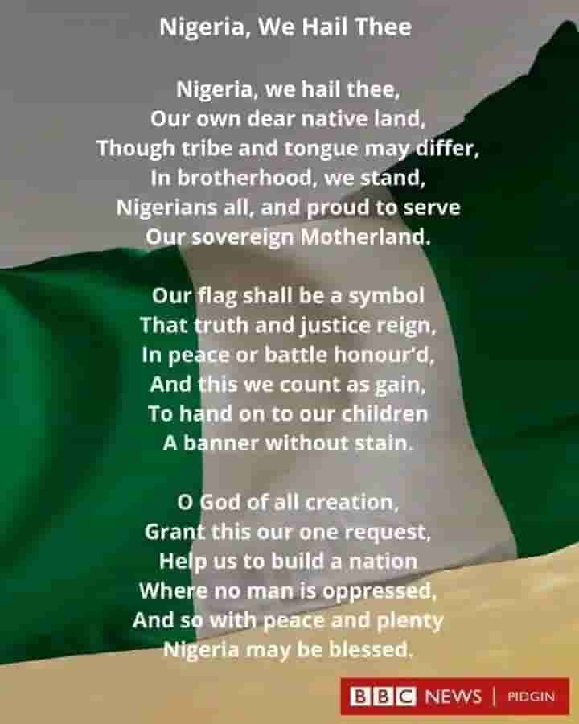

Food
Learn about popular Nigerian dishes and the cultural traditions connected with food.
Explore FoodDiscover Nigeria
Culture, Food, Places, and Heritage
Explore the beauty and diversity of Nigeria through its traditional foods, remarkable places, rich culture, and heritage.
Nigeria is a country with many peoples, languages, traditions, landscapes, and stories. This website provides an introduction to some of the things that make Nigeria unique and interesting.

Learn about popular Nigerian dishes and the cultural traditions connected with food.
Explore FoodLearn about Nigerian traditions, celebrations, clothing, music, languages, and cultural practices.
Explore CultureNigeria is located in West Africa and is known for its cultural diversity, large population, historical heritage, natural environments, creative industries, and many regional traditions.
From the northern savannas to the southern rainforest and coastal areas, Nigeria contains a wide range of environments and communities. Its cultural diversity can be experienced through food, music, clothing, festivals, art, language, and everyday life.